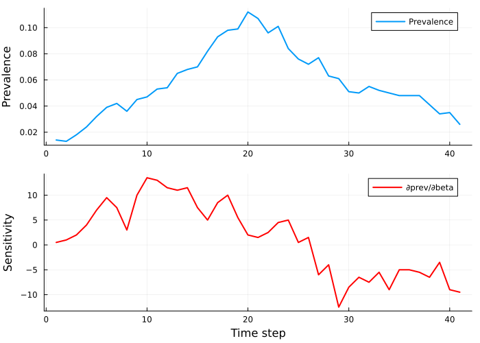
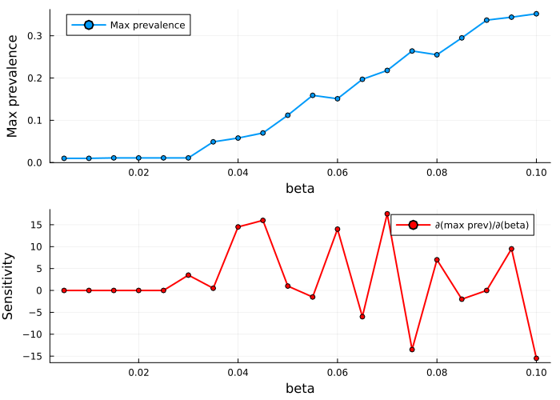

Automatic Differentiation for Sensitivity Analysis
Simon Frost
- Overview
- Setup
- Basic sensitivity analysis
- Sensitivity timeseries
- Parameter sweep with sensitivity
- Gradient-based calibration
- Summary
Overview
One advantage of implementing agent-based models in Julia is access to the automatic differentiation (AD) ecosystem. This vignette demonstrates how to use the ForwardDiff.jl extension of Starsim.jl to compute parameter sensitivities — how changes in model parameters affect disease outcomes.
For stochastic agent-based models, true AD through the simulation loop is challenging due to discrete branching. Starsim.jl uses central finite differences with common random numbers (CRN) — the same random seed ensures that the only variation between perturbed runs comes from the parameter change, not stochastic noise. This gives clean, interpretable sensitivity estimates.
Setup
using Starsim
using ForwardDiff
using PlotsBasic sensitivity analysis
Let’s compute how the peak prevalence of an SIR epidemic changes with the transmission rate beta.
n_contacts = 10
beta = 0.5 / n_contacts
sim = Sim(
n_agents = 1000,
diseases = SIR(beta=beta, dur_inf=4.0, init_prev=0.01),
networks = RandomNet(n_contacts=n_contacts),
start = 0.0, stop = 40.0, dt = 1.0,
rand_seed = 42,
)
init!(sim)
run!(sim; verbose=0)
# Compute ∂(max prevalence)/∂(beta)
dsdb = sensitivity(sim, :beta;
module_name = :sir,
result = :prevalence,
summary = maximum,
)
println("∂(max prevalence)/∂(beta) = $(round(dsdb, digits=2))")∂(max prevalence)/∂(beta) = 1.0A positive value means increasing beta increases peak prevalence, as expected.
Sensitivity timeseries
We can also compute how the entire prevalence curve shifts when beta changes:
ts = sensitivity_timeseries(sim, :beta;
module_name = :sir,
result = :prevalence,
)
prev = module_results(sim.diseases[:sir])[:prevalence].values
p = plot(layout=(2,1), size=(700,500))
plot!(p[1], prev, label="Prevalence", ylabel="Prevalence", lw=2)
plot!(p[2], ts, label="∂prev/∂beta", ylabel="Sensitivity",
xlabel="Time step", lw=2, color=:red)
p
The sensitivity timeseries shows when the epidemic is most responsive to changes in beta — typically during the exponential growth phase.
Parameter sweep with sensitivity
Let’s sweep over beta values and compute the sensitivity at each point:
betas = 0.005:0.005:0.10
max_prevs = Float64[]
sensitivities = Float64[]
for b in betas
s = Sim(
n_agents = 1000,
diseases = SIR(beta=b, dur_inf=4.0, init_prev=0.01),
networks = RandomNet(n_contacts=n_contacts),
start = 0.0, stop = 40.0, dt = 1.0,
rand_seed = 42,
)
init!(s)
run!(s; verbose=0)
push!(max_prevs, maximum(module_results(s.diseases[:sir])[:prevalence].values))
ds = sensitivity(s, :beta;
module_name = :sir, result = :prevalence, summary = maximum,
)
push!(sensitivities, ds)
end
p = plot(layout=(2,1), size=(700,500))
plot!(p[1], collect(betas), max_prevs, label="Max prevalence",
xlabel="beta", ylabel="Max prevalence", lw=2, marker=:o, ms=3)
plot!(p[2], collect(betas), sensitivities, label="∂(max prev)/∂(beta)",
xlabel="beta", ylabel="Sensitivity", lw=2, marker=:o, ms=3, color=:red)
p
The sensitivity is highest at intermediate beta values where the epidemic is most responsive to small parameter changes. At very low beta (no epidemic) or very high beta (everyone infected quickly), the sensitivity drops.
Gradient-based calibration
The ForwardDiff extension also provides gradient_objective for use in calibration. This computes both the objective value and its gradient, enabling gradient-based optimization methods:
# Create synthetic target data
target_sim = Sim(
n_agents = 1000,
diseases = SIR(beta=0.08, dur_inf=4.0, init_prev=0.01),
networks = RandomNet(n_contacts=n_contacts),
start = 0.0, stop = 40.0, dt = 1.0,
rand_seed = 1,
)
init!(target_sim)
run!(target_sim; verbose=0)
target_prev = maximum(module_results(target_sim.diseases[:sir])[:prevalence].values)
println("Target max prevalence: $(round(target_prev, digits=4))")
# Set up calibration
base_sim = Sim(
n_agents = 1000,
diseases = SIR(beta=beta, dur_inf=4.0, init_prev=0.01),
networks = RandomNet(n_contacts=n_contacts),
start = 0.0, stop = 40.0, dt = 1.0,
rand_seed = 42,
)
init!(base_sim)
calib = Calibration(
sim = base_sim,
calib_pars = [CalibPar(:beta, low=0.01, high=0.15, initial=0.05, module_name=:sir, par_name=:beta)],
components = [CalibComponent(:sir, target_data=[target_prev], sim_result=:prevalence, disease_name=:sir)],
n_trials = 50,
)
# Compute gradient at initial point
x0 = [0.05]
obj, grad = gradient_objective(calib, x0)
println("Objective at beta=0.05: $(round(obj, digits=6))")
println("Gradient: $(round.(grad, digits=4))")Target max prevalence: 0.283
Objective at beta=0.05: 0.073441
Gradient: [0.0]The gradient tells us which direction to move the parameter to reduce the objective, enabling faster convergence than derivative-free methods.
Summary
| Feature | Description |
|---|---|
sensitivity(sim, :par) | Scalar sensitivity via CRN finite differences |
sensitivity_timeseries(sim, :par) | Per-timestep sensitivity curve |
gradient_objective(calib, x) | Objective + gradient for calibration |
Key design choices: - CRN-based finite differences: Same seed for +h and -h runs eliminates stochastic noise - Default h=1e-3: Appropriate for stochastic ABMs (much larger than typical AD perturbations) - Extension pattern: Only loaded when using ForwardDiff — no extra dependencies for users who don’t need AD